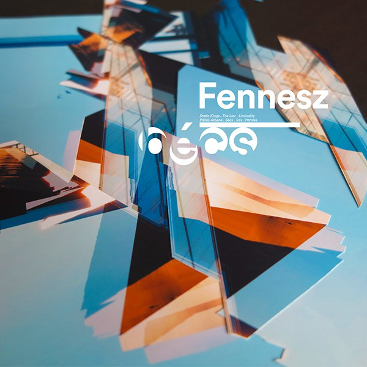

Fennesz- Becs



Género: Electronic
Sello: Editions Mego
Año: 2014-04
Total de pistas: 7
Información de Producción
| Campo | Información |
|---|---|
| Sello | Editions Mego |
| Año | 2014-04 |
| Género | Electronic |
| Total de pistas | 7 |
| Masterización | Rashad Becker |
| Design Cover Design | Tina Frank |
| Mastered By, Lacquer Cut By | Rashad Becker |
| Written-By All Tracks By | Fennesz |
Tracklist
1. Static Kings [5:46] | 📺 YouTube
2. The Liar [4:37] | 📺 YouTube
3. Liminality [10:00] | 📺 YouTube
4. Pallas Athene [6:10] | 📺 YouTube
5. Bécs [5:43] | 📺 YouTube
6. Sav [7:35] | 📺 YouTube
7. Paroles [3:36] | 📺 YouTube
Instrumentos y Equipos
| Tipo | Marca | Modelo | Año | Precio | Puntuación | Enlaces |
|---|---|---|---|---|---|---|
| unknown | Apogee | Duet 2 USB Audio Interface | 2025 | - | - | 🎛️ Equipboard |
| software | Apple Logic | Pro | 2025 | - | - | 🎛️ Equipboard |
| microphone | Arturia | MicroFreak | 2025 | - | - | 🎛️ Equipboard |
| unknown | Borderlands | Granular for iPad | 2025 | - | - | 🎛️ Equipboard |
| effect_pedal | Boss | DF-2 Super Feedbacker & Distortion | 2025 | - | - | 🎛️ Equipboard |
| effect_pedal | Boss | DS-2 Turbo Distortion | 2025 | - | - | 🎛️ Equipboard |
| effect_pedal | Boss | FDR-1 Fender ‘65 Deluxe Reverb | 2025 | - | - | 🎛️ Equipboard |
| effect_pedal | Boss | PS-3 Pitch Shifter/Delay | 2025 | - | - | 🎛️ Equipboard |
| unknown | Cycling | ‘74 Max | 2025 | - | - | 🎛️ Equipboard |
| effect_pedal | EarthQuaker | Devices Sunn O))) Life Pedal V3 Octave Distortion + Booster | 2025 | - | - | 🎛️ Equipboard |
| unknown | Electro-Harmonix | Stereo Memory Man with Hazarai | 2025 | - | - | 🎛️ Equipboard |
| unknown | Electro-Harmonix | Superego+ | 2025 | - | - | 🎛️ Equipboard |
| unknown | Ensoniq | ASR-10 | 2025 | $200+ | - | 🎛️ Equipboard |
| unknown | Ensoniq | EPS 16 Plus | 2025 | $200+ | - | 🎛️ Equipboard |
| effect_pedal | Fender | ‘65 Twin Reverb | 2025 | - | - | 🎛️ Equipboard |
| unknown | Fender | Jazzmaster | 2025 | - | - | 🎛️ Equipboard |
| electric_guitar | Fender | Stratocaster Electric Guitar | 2025 | - | - | 🎛️ Equipboard |
| electric_guitar | Line | 6 POD 2.0 Guitar Multi Effects Processor | 2025 | - | - | 🎛️ Equipboard |
| unknown | MXR | M103 Blue Box | 2025 | - | - | 🎛️ Equipboard |
| unknown | Madrona | Labs Aalto | 2024 | - | - | 🎛️ Equipboard |
| unknown | Max/MSP | - | 2025 | - | - | 🎛️ Equipboard |
| unknown | Midas | Venice 160 | 2025 | - | - | 🎛️ Equipboard |
| unknown | Native Instruments | REAKTOR | 2025 | - | - | 🎛️ Equipboard |
| unknown | Roland | RE-201 Space Echo | 2025 | - | - | 🎛️ Equipboard |
| unknown | SoundHack | Spectral Shapers 2.00 | 2025 | - | - | 🎛️ Equipboard |
| unknown | Squier | J Mascis Jazzmaster | 2025 | - | - | 🎛️ Equipboard |
| amplifier | Tech | 21 SansAmp GT2 | 2025 | - | - | 🎛️ Equipboard |
| unknown | Vox | AC15 C1X | 2025 | - | - | 🎛️ Equipboard |
| unknown | ppooll | - | 2024 | - | - | 🎛️ Equipboard |
Reviews y Menciones
📝 Reviews y Artículos
| Fuente | Título | Fecha | Origen |
|---|---|---|---|
| pitchfork.com | [Fennesz: Bécs Album Review | Pitchfork](https://pitchfork.com/reviews/albums/19291-fennesz-becs/) | 26/05/2025 |
| popmatters.com | Fennesz: Bécs » PopMatters | 26/05/2025 | review_anydecentmusic |
| factmag.com | Bécs - Fact Magazine | 26/05/2025 | review_anydecentmusic |
| crackmagazine.net | [Fennesz | Crack Magazine](https://crackmagazine.net/article/news/fennesz/) | 26/05/2025 |
| thequietus.com | [Fennesz — Bécs | The Quietus](https://thequietus.com/quietus-reviews/fennesz-bcs-review/) | 26/05/2025 |